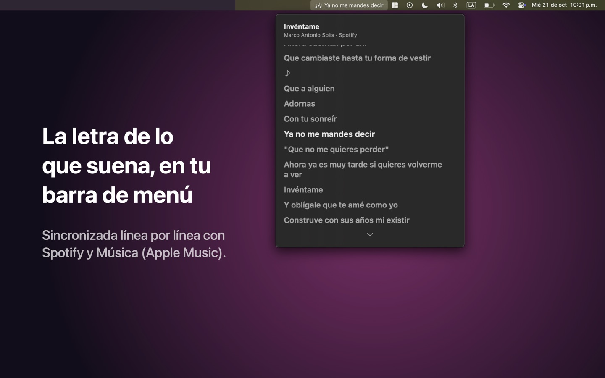
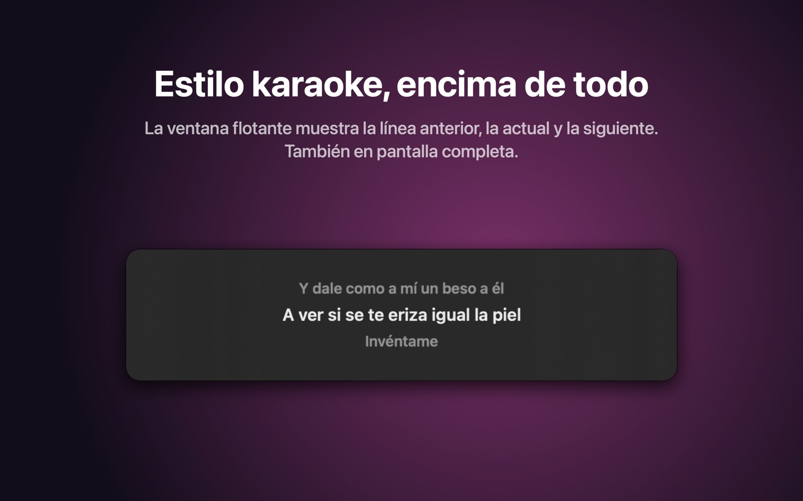
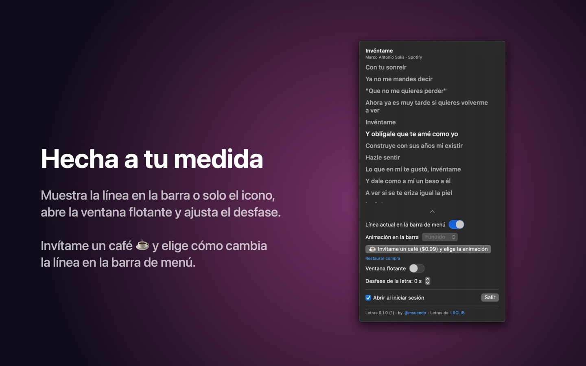

Canta sin buscar la letra
Pones play y la letra aparece sola. Puedes verla de tres formas.
En la barra de menú
La línea que se está cantando, junto al icono. Si prefieres, la apagas y queda solo el icono.
En el panel
La letra completa, con la línea actual resaltada y siempre al centro.
Ventana flotante
La línea anterior, la actual y la siguiente, estilo karaoke, encima de todo (también en pantalla completa).
Desfase y sin internet
Si una letra va atrasada o adelantada, la ajustas de 0.25 s en 0.25 s. Las canciones que ya sonaron conservan su letra aunque no haya internet.



Instalar
- Descarga el DMG más reciente y ábrelo.
- Arrastra Letras a la carpeta Aplicaciones y ábrela. Aparece en la barra de menú.
- Pon una canción. La primera vez, macOS pregunta si Letras puede controlar Spotify o Música: di que sí. Así sabe qué suena y en qué segundo va. Letras no cambia nada en el reproductor.
¿Dijiste que no por error? Actívalo en Ajustes del Sistema › Privacidad y seguridad › Automatización › Letras.
Gratis, y con café ☕
Todo lo de arriba es gratis. En la Mac App Store, “Invítame un café” es una compra única que además deja elegir cómo cambia la línea en la barra: deslizar, rodillo, revelado, fundido o sin animación. El DMG de esta página trae todo incluido.
Tu música es tuya
Sin cuentas, sin analíticas, sin publicidad y sin rastreo. Para buscar la letra solo se envían el título, el artista, el álbum y la duración a LRCLIB, una base de datos abierta y gratuita. Política de privacidad.